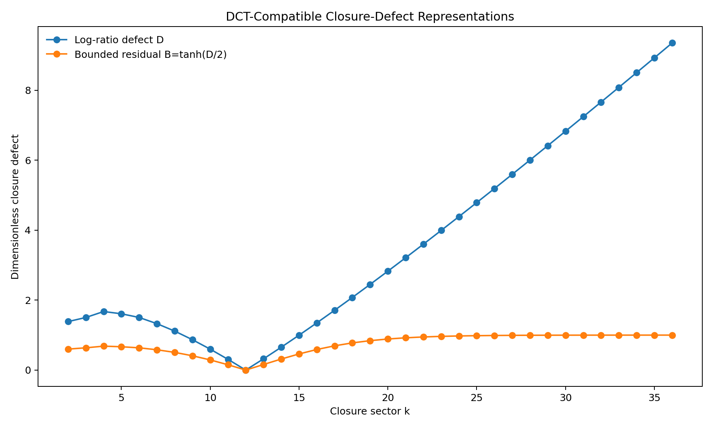
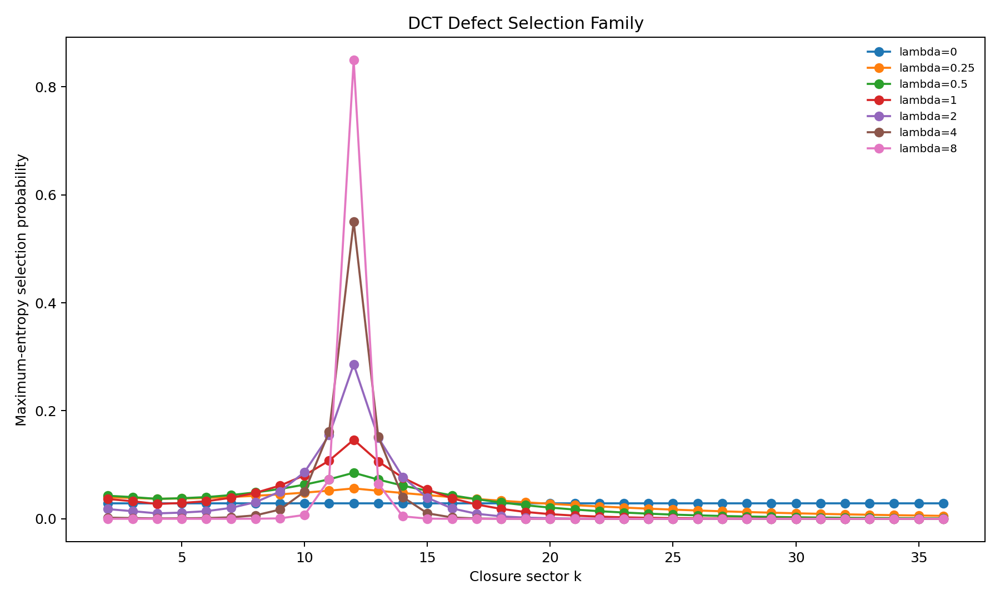
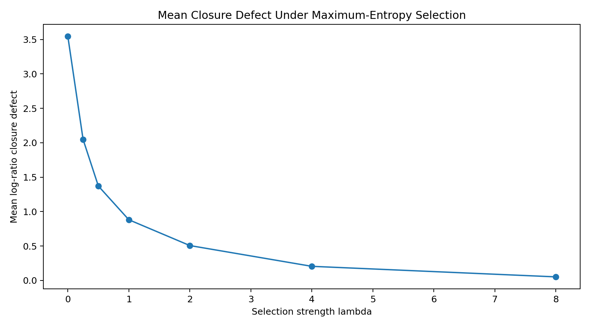
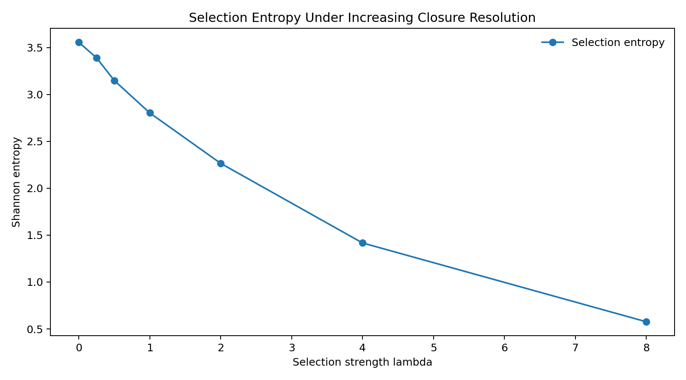
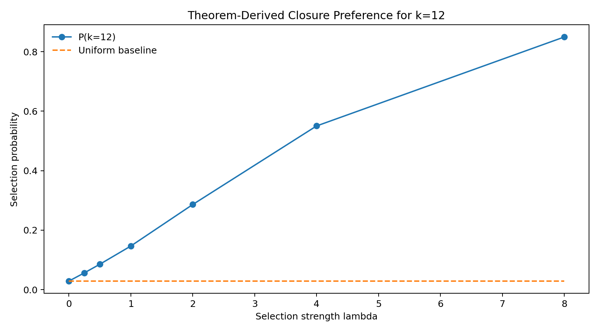
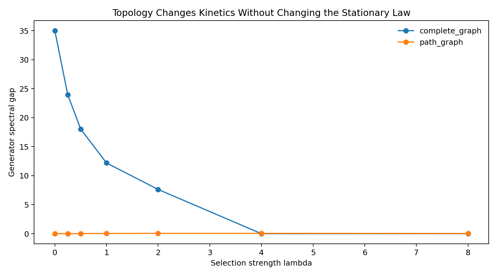

Entry 09
Closure Defect and Theorem-Compatible Selection Functional
Entry 09 begins the post-theorem phase.
entry_09
Outputs folder: output
Figures
Click any figure to enlarge it.
{kind=link}

maxent_selection_family.png
{kind=link}

mean_defect_vs_lambda.png
{kind=link}

selection_entropy_vs_lambda.png
{kind=link}

target_selection_probability.png
{kind=link}

topology_spectral_gap.png
{kind=link}
Tables
Embedded previews of CSV/TSV outputs with links to the full raw files.
| k | F_k | closure_capacity_k2 | signed_integer_defect | absolute_integer_defect | ratio_F_over_C | log_ratio_defect_D | bounded_defect_B | … |
|---|---|---|---|---|---|---|---|---|
| 2 | 1 | 4 | -3 | 3 | 0.25 | 1.3862943611198906 | 0.6 | … |
| 3 | 2 | 9 | -7 | 7 | 0.2222222222222222 | 1.5040773967762742 | 0.6363636363636364 | … |
| 4 | 3 | 16 | -13 | 13 | 0.1875 | 1.6739764335716716 | 0.6842105263157895 | … |
| 5 | 5 | 25 | -20 | 20 | 0.2 | 1.6094379124341003 | 0.6666666666666666 | … |
| 6 | 8 | 36 | -28 | 28 | 0.2222222222222222 | 1.5040773967762742 | 0.6363636363636364 | … |
| 7 | 13 | 49 | -36 | 36 | 0.2653061224489796 | 1.3268709406490897 | 0.5806451612903226 | … |
Preview only — columns truncated, rows truncated. Open full file
| k | log_ratio_defect_D | bounded_defect_B | symmetric_relative_defect | rank_D | rank_B | rank_symmetric | all_ranks_equal |
|---|---|---|---|---|---|---|---|
| 2 | 1.3862943611198906 | 0.6 | 1.5 | 11.0 | 11.0 | 11.0 | True |
| 3 | 1.5040773967762742 | 0.6363636363636364 | 1.649915822768611 | 12.0 | 12.0 | 12.0 | True |
| 4 | 1.6739764335716716 | 0.6842105263157895 | 1.8763883748662837 | 15.0 | 15.0 | 15.0 | True |
| 5 | 1.6094379124341003 | 0.6666666666666666 | 1.7888543819998317 | 14.0 | 14.0 | 14.0 | True |
| 6 | 1.5040773967762742 | 0.6363636363636364 | 1.649915822768611 | 12.0 | 12.0 | 12.0 | True |
| 7 | 1.3268709406490897 | 0.5806451612903226 | 1.426371933150589 | 9.0 | 9.0 | 9.0 | True |
Preview only — rows truncated. Open full file
| maximum_detailed_balance_flux_error | maximum_rate_ratio_error | stationary_distribution_residual_L1 | spectral_gap | minimum_generator_real_eigenvalue | maximum_generator_real_eigenvalue | lambda | topology |
|---|---|---|---|---|---|---|---|
| 0.0 | 0.0 | 2.1961599205866378e-15 | 34.99999999999996 | -35.000000000000036 | -9.079620302763761e-15 | 0.0 | complete_graph |
| 0.0 | 0.0 | 0.0 | 0.0080514120095218 | -3.9919485879904792 | 1.8579363823636725e-17 | 0.0 | path_graph |
| 1.3877787807814457e-17 | 1.7763568394002505e-15 | 3.4547261007086534e-15 | 23.95894935522109 | -76.19089638275331 | -1.4210854715202004e-14 | 0.25 | complete_graph |
| 1.3877787807814457e-17 | 2.220446049250313e-16 | 2.1208134067377536e-16 | 0.01267478748498309 | -3.9916348704082805 | -9.121046338403394e-17 | 0.25 | path_graph |
| 1.3877787807814457e-17 | 1.4210854715202004e-14 | 3.270406356403093e-15 | 18.04846967117811 | -183.37662467460623 | 1.6798209251540288e-15 | 0.5 | complete_graph |
| 1.3877787807814457e-17 | 2.220446049250313e-16 | 1.5872014843662813e-16 | 0.0209544734912757 | -3.996704323665351 | 4.543890791218622e-16 | 0.5 | path_graph |
Preview only — rows truncated. Open full file
| lambda | k | defect_D | selection_probability | ensemble_mean_defect | selection_entropy |
|---|---|---|---|---|---|
| 0.0 | 2 | 1.3862943611198906 | 0.02857142857142857 | 3.54475759006529 | 3.5553480614894135 |
| 0.0 | 3 | 1.5040773967762742 | 0.02857142857142857 | 3.54475759006529 | 3.5553480614894135 |
| 0.0 | 4 | 1.6739764335716716 | 0.02857142857142857 | 3.54475759006529 | 3.5553480614894135 |
| 0.0 | 5 | 1.6094379124341003 | 0.02857142857142857 | 3.54475759006529 | 3.5553480614894135 |
| 0.0 | 6 | 1.5040773967762742 | 0.02857142857142857 | 3.54475759006529 | 3.5553480614894135 |
| 0.0 | 7 | 1.3268709406490897 | 0.02857142857142857 | 3.54475759006529 | 3.5553480614894135 |
Preview only — rows truncated. Open full file
| lambda | target_k | target_probability | uniform_probability | target_gain_over_uniform | highest_probability_k | highest_probability_tie_count | highest_probability | … |
|---|---|---|---|---|---|---|---|---|
| 0.0 | 12 | 0.02857142857142857 | 0.02857142857142857 | 1.0 | 2,3,4,5,6,7,8,9,10,11,12,13,14,15,16,17,18,19,20,21,22,23,24,25,26,27,28,29,30,31,32,33,34,35,36 | 35 | 0.02857142857142857 | … |
| 0.25 | 12 | 0.05626783522438576 | 0.02857142857142857 | 1.9693742328535018 | 12 | 1 | 0.05626783522438576 | … |
| 0.5 | 12 | 0.08526522177405073 | 0.02857142857142857 | 2.984282762091776 | 12 | 1 | 0.08526522177405073 | … |
| 1.0 | 12 | 0.1464314001397227 | 0.02857142857142857 | 5.125099004890295 | 12 | 1 | 0.1464314001397227 | … |
| 2.0 | 12 | 0.2860165401380055 | 0.02857142857142857 | 10.010578904830192 | 12 | 1 | 0.2860165401380055 | … |
| 4.0 | 12 | 0.5501551782187964 | 0.02857142857142857 | 19.255431237657877 | 12 | 1 | 0.5501551782187964 | … |
Preview only — columns truncated, rows truncated. Open full file
Source files
Theoretical notes
Data files
No files in this category.
Other artifacts
No files in this category.